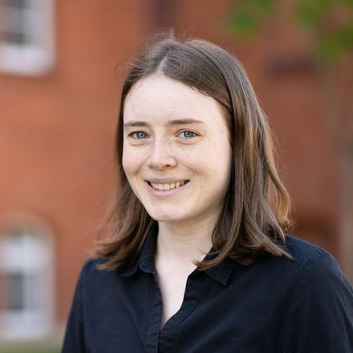

Comparison of Dimension Reduction Methods for EEG Seizure Detection Using Autonomous AI-Driven Optimization
A. Stiehl, V. Kagade, N. Weeger, N. Ille, S. Geißelsöder, C. Uhl
BMT 2026, Augsburg, Germany · Oct 2026

PhD Student in Signal Processing & Deep Learning
Center for Signal Analysis of Complex Systems (CCS) · Ansbach University of Applied Sciences
I am a PhD student in signal processing and deep learning at Ansbach University of Applied Sciences, Germany, working in the research projects DEEP-EEG and DyCA. My research focuses on deep learning for EEG analysis, in particular automated epileptic seizure detection, the detection of interictal epileptiform discharges, low-density EEG setups and dimension reduction methods such as Dynamical Component Analysis (DyCA).
In 2025 I spent a DAAD-funded research stay at the Institut de Neurosciences des Systèmes (Aix-Marseille Université), working with The Virtual Brain. I also teach computer science and an introduction to artificial intelligence.
Comparison of Dimension Reduction Methods for EEG Seizure Detection Using Autonomous AI-Driven Optimization
A. Stiehl, V. Kagade, N. Weeger, N. Ille, S. Geißelsöder, C. Uhl
BMT 2026, Augsburg, Germany · Oct 2026
Low-Density EEG for Seizure Detection: Evaluating CNN-RNN Architectures on a Behind-the-Ear Montage Setup
A. Stiehl, P. Wingert, N. Weeger, N. Ille, C. Uhl, S. Geißelsöder
European Signal Processing Conference (EUSIPCO), Bruges, Belgium · Aug/Sep 2026
Towards Automated EEG-Based Epilepsy Detection Using Deep Convolutional Autoencoders
A. Stiehl, N. Weeger, C. Uhl, D. Bechtold, N. Ille, S. Geißelsöder
47th Annual International Conference of the IEEE EMBC, Copenhagen, Denmark · Jul 2025
Disentangling Dynamic and Stochastic Modes in Multivariate Time Series
C. Uhl, A. Stiehl, N. Weeger, M. Schlarb, K. Hüper
Frontiers in Applied Mathematics and Statistics · Oct 2024
DOIComparison of Mode Selection and Reconstructions Obtained by DyCA and DMD with Respect to Noise Robustness and Sampling
A. Stiehl, N. Weeger, C. Uhl
CONTROLO 2024, Porto, Portugal · Jul 2024 · Springer, pp. 247-257
ProceedingsSignal Analysis and Classification of Interictal Epileptiform Discharges from EEG with Machine Learning
A. Stiehl et al.
BMT 2023, Duisburg, Germany · Sep 2023
Topological Analysis of Low Dimensional Phase Space Trajectories of High Dimensional EEG Signals for Classification of Interictal Epileptiform Discharges
A. Stiehl, M. Flammer, F. Anselstetter, N. Ille, H. Bornfleth, S. Geißelsöder, C. Uhl
IEEE ICASSP Workshops, Rhodes, Greece · Jun 2023
Different Montages and Dimension Reduction Methods for EEG Signal Analysis of Interictal Epileptic Discharges
A. Stiehl et al.
BMT 2022 (abstract), Innsbruck, Austria · Sep 2022
Dimension Reduction Methods, Persistent Homology and Machine Learning for EEG Signal Analysis of Interictal Epileptic Discharges
A. Stiehl, S. Geißelsöder, N. Ille, F. Anselstetter, H. Bornfleth, C. Uhl
Workshop Biosignale, Dresden, Germany · Aug 2022
arXiv (Feb 2025)Full list on Google Scholar.
Dimension reduction methods for EEG seizure detection
BMT 2026, Augsburg, Germany
Low-density EEG for seizure detection
EUSIPCO 2026, Bruges, Belgium
EEG analysis with deep learning (poster)
Wissenschaftscafé
EEG-based epilepsy detection using deep convolutional autoencoders
IEEE EMBC 2025, Copenhagen, Denmark
DyCA and DMD: mode selection and noise robustness
CONTROLO 2024, Porto, Portugal
Signal analysis and classification of interictal epileptiform discharges from EEG
BMT 2023, Duisburg, Germany
Topological analysis of phase space trajectories of EEG signals
IEEE ICASSP Workshops, Rhodes, Greece
Dimension reduction, persistent homology and machine learning for EEG
Workshop Biosignale, Dresden, Germany
PhD, Signal Processing & Deep Learning
Ansbach University of Applied Sciences · Deep learning for EEG analysis
M.Sc. Applied Research in Engineering Sciences
Ansbach University of Applied Sciences · Thesis on machine learning detection of interictal epileptiform discharges
B.Eng. Electrical Engineering
DHBW Stuttgart & Robert Bosch GmbH · Thesis on a digital twin of a CNC system for fused deposition modeling
PhD Student, CCS
Ansbach University of Applied Sciences · Deep learning for seizure detection, EEG preprocessing, supervision of student theses
Research Stay
Institut de Neurosciences des Systèmes, Aix-Marseille Université · The Virtual Brain
Lecturer
Ansbach University of Applied Sciences · Computer Science, Introduction to Artificial Intelligence
Research Assistant
Ansbach University of Applied Sciences · AI-based microscopy image analysis for antibiotic production
Dual Student
Robert Bosch GmbH, Stuttgart